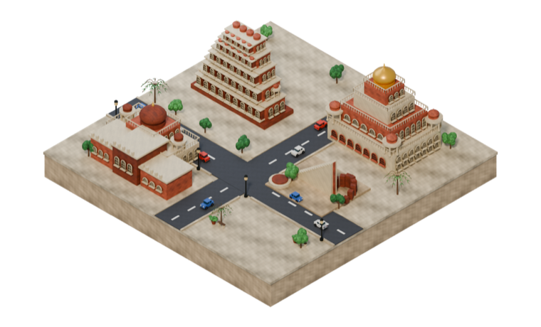
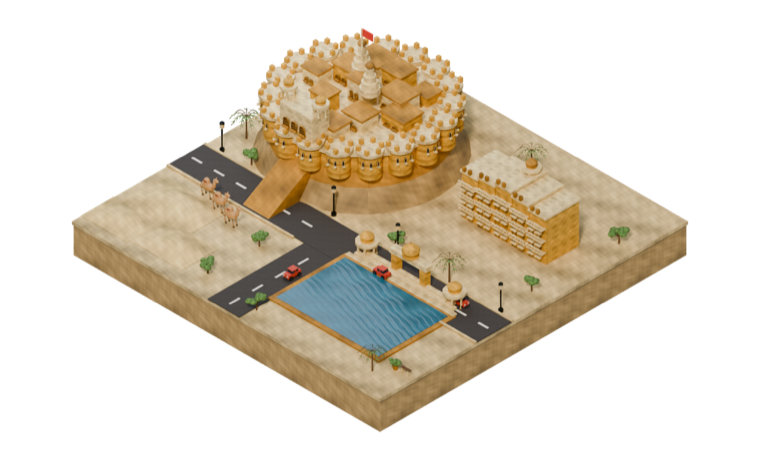
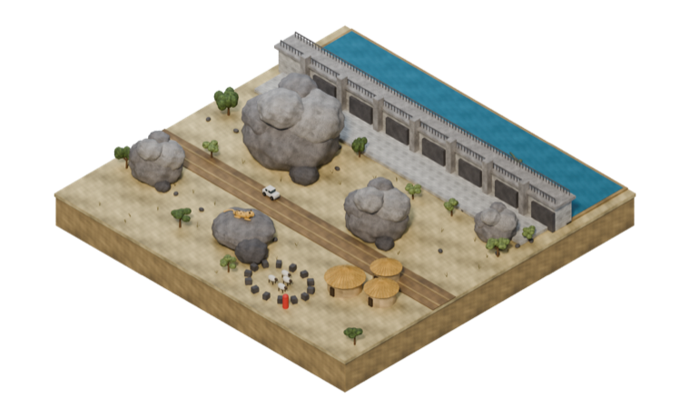
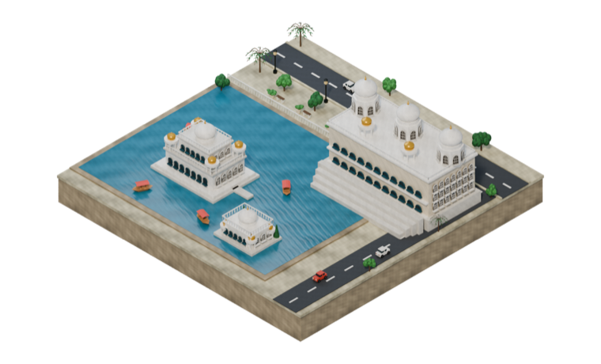

AData Science & Machine Learning
- Python
- Data Analysis
- Machine Learning
- Classification
- Clustering
- Regression
- Anomaly Detection
Bangalore, India · BTech, 3rd year
Digital Transformation Student | Aspiring Data Scientist
Hey! I'm a curious person who loves learning new things, trying new ideas, and building things along the way.
I'm a third-year BTech student at Atria University, studying Digital Transformation. I like exploring technology in general — but data and machine learning are the parts that keep pulling me back.
Right now I'm putting most of my time into Data Science and Machine Learning: working through datasets, trying out different models, and slowly getting better at understanding why something works (or doesn't).
What I really want is to use data to build practical things — solutions that are actually useful, not just notebooks sitting in a folder. I still enjoy building for the web too, so you'll find a bit of both below.
Data science first — with a couple of things I built for the web.
An academic machine learning project looking at startup funding and what company success looks like in the data — using both supervised and unsupervised methods.
An academic project using unsupervised learning to find distinct patient groups and flag unusual clinical profiles — focused on the process of choosing, fitting and checking the models.
An interactive travel experience across four Rajasthan destinations — Jaipur, Jaisalmer, Jawai and Udaipur. It opens on a WebGL scene, and each place is represented by an isometric city tile built in Blender.




A full-stack web app for tracking and visualising patient vitals, with separate experiences for patients and doctors behind a login.
Smaller builds and practice projects.
A browser maze game — reach the stairs before the enemy chasing you does. Keyboard controls, drawn on canvas, best score saved locally.
Coursework and practice building REST APIs — Express routing, middleware, Node modules and a movies API backed by MongoDB.
A multiplayer command-line card game for 10 players, with hidden information, special cards, infection logic and round-based matchmaking.
Shows students their overall attendance, with separate instructor and admin logins.
A small Pac-Man that runs in the terminal, drawn with coloured ASCII art.
BTech — Digital Transformation
My hands-on experience so far comes from academic and personal projects.
Exploring datasets — startup funding, rounds, investment, industry and continent — and figuring out which patterns are worth modelling.
→ Startup Funding AnalysisSupervised work with classification and regularised regression (Ridge, Lasso, ElasticNet), and unsupervised work with K-Means, DBSCAN and Isolation Forest.
→ Startup Funding · Heart Disease ClusteringFrom a WebGL travel site to a Node/Express/MongoDB app with JWT login — plus smaller games and API practice.
→ Visit Rajasthan · Patient Vitals TrackerMy degree, and the lens that ties the rest together — thinking about where technology and data can actually improve how things get done.
→ BTech, Atria UniversityWhether it's a project, an internship, or just something interesting about data — I'd love to hear from you.